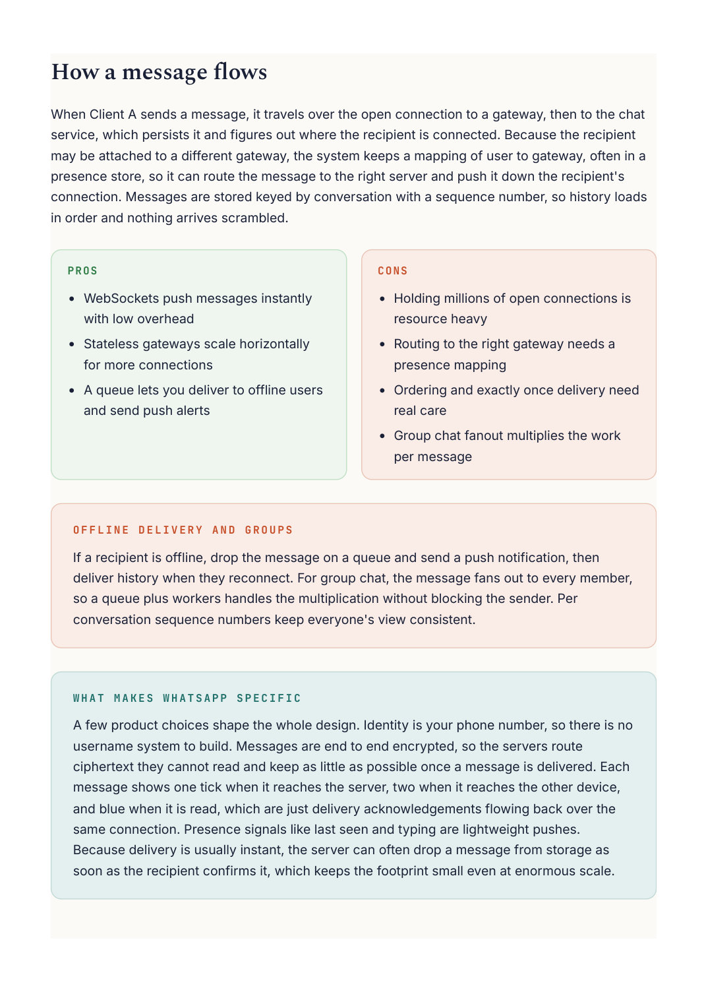
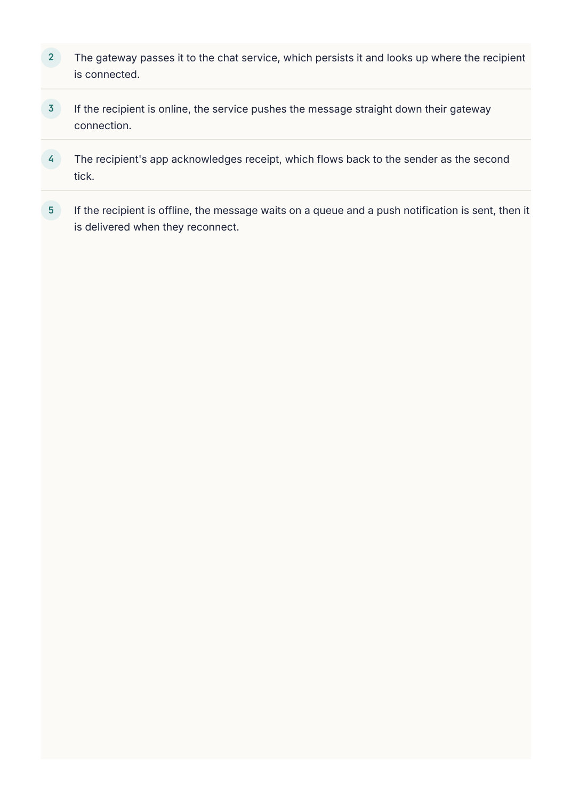

System Design
Chapter 29
Design: WhatsApp
WhatsApp is the classic chat design. It forces you to think about real time delivery, which most systems never need, plus the twist of holding hundreds of millions of live connections open at once and getting a message from one phone to another in milliseconds.
Requirements
Support one to one and group messages, deliver them in real time, show who is online, keep message history, and ideally show delivery and read receipts. The non functional headline is low latency delivery and a huge number of simultaneous open connections.
The real time transport
A normal request and response cannot push a message to you when it arrives. The answer is a WebSocket, a connection that stays open in both directions, so the server can push a message the instant it is received. Clients hold a live WebSocket to a gateway server, and that persistent connection is the backbone of the whole system.
Message DB Client A WebSocket Chat service gateways route + persist Client B Presence who is online persistent WebSocket connections shown dashed Clients hold a live connection to a gateway, which routes messages through the chat service.

When Client A sends a message, it travels over the open connection to a gateway, then to the chat service, which persists it and figures out where the recipient is connected. Because the recipient may be attached to a different gateway, the system keeps a mapping of user to gateway, often in a presence store, so it can route the message to the right server and push it down the recipient's connection. Messages are stored keyed by conversation with a sequence number, so history loads If a recipient is offline, drop the message on a queue and send a push notification, then deliver history when they reconnect. For group chat, the message fans out to every member, so a queue plus workers handles the multiplication without blocking the sender. Per conversation sequence numbers keep everyone's view consistent. A few product choices shape the whole design. Identity is your phone number, so there is no username system to build. Messages are end to end encrypted, so the servers route ciphertext they cannot read and keep as little as possible once a message is delivered. Each message shows one tick when it reaches the server, two when it reaches the other device, and blue when it is read, which are just delivery acknowledgements flowing back over the same connection. Presence signals like last seen and typing are lightweight pushes. Because delivery is usually instant, the server can often drop a message from storage as soon as the recipient confirms it, which keeps the footprint small even at enormous scale.
Going Deeper
Group messages and keeping order
One to one delivery is simple, but a group message has to reach every member, and each of them may be connected to a different gateway server. The chat service looks up where each member is connected and fans the message out to all of them, using a queue so a large group does not block the sender while it delivers. Ordering matters too, so each conversation stamps its messages with an increasing sequence number, and clients display by that sequence. That keeps everyone's view of the chat consistent even when messages happen to arrive out of order. one message, copied to every member's connection member A gateway Chat service Sender member B gateway fan out to members member C gateway A group message fans out to every member, each possibly on a different gateway, using a queue to avoid blocking the sender.
M U L T I P L E D E V I C E S A N D O F F L I N E D E L I V E R Y
A user may be on a phone and a laptop at once, so a message is delivered to every active device and marked read across them together. If a device is offline, the message waits on a per user queue and a push notification is sent, then the history syncs when that device reconnects, so nothing is missed.
Step By Step
How a single WhatsApp message travels from one phone to another.
The sender's phone sends the message over its open WebSocket connection to a gateway. 1

The gateway passes it to the chat service, which persists it and looks up where the recipient If the recipient is online, the service pushes the message straight down their gateway The recipient's app acknowledges receipt, which flows back to the sender as the second If the recipient is offline, the message waits on a queue and a push notification is sent, then it